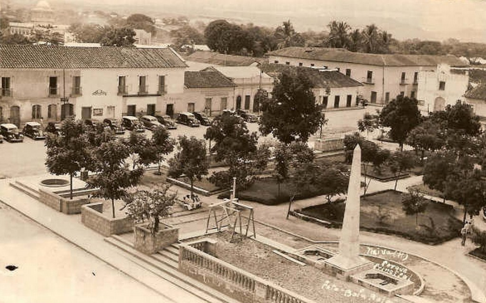

Breve historia de Neiva
Neiva fue fundada inicialmente por Juan de Cabrera en 1539; sin embargo, fue destruida debido a los enfrentamientos entre aborígenes y conquistadores. En 1551, el español Juan Alonso la fundó nuevamente en el sitio donde hoy se encuentra Villavieja; de igual manera, fue destruida como su antecesora.Finalmente, el capitán Diego de Ospina y Medinilla la fundó en su ubicación actual, el día 24 de mayo de 1612.
Su historia ha estado íntimamente ligada al Tolima e Ibagué, tanto así que durante la colonia y primeros años de la República, los tres formaron parte de un mismo territorio.
En 1814 la provincia de Mariquita se declaró independiente y estableció su capital en Honda.
En 1824 esta provincia se organizó con los cantones de Honda, Mariquita, Ibagué y la Palma, territorios que hoy son parte de Tolima y Huila. En 1857 se crearon departamentos en vez de provincias y el territorio, que desde 1851 tenía ya como capital a Ibagué, se redistribuyó. En 1861 se creó el estado soberano del Tolima, con capital en Purificación y más adelante, en 1886, éste fue convertido en departamento, y en virtud de ello se creó el departamento del Huila con capital en Neiva. 